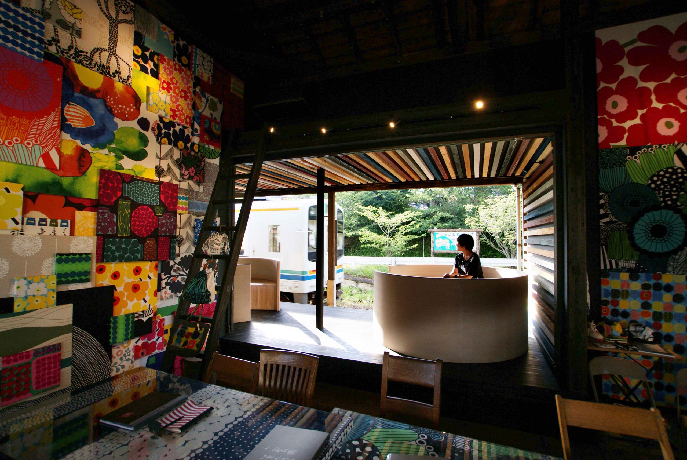
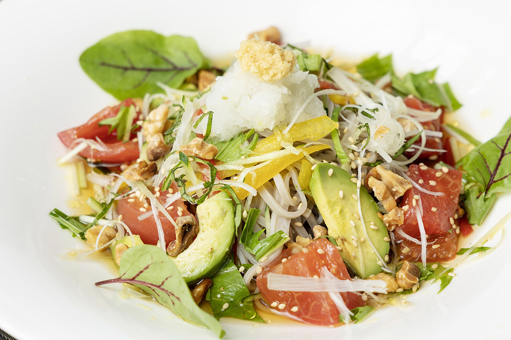
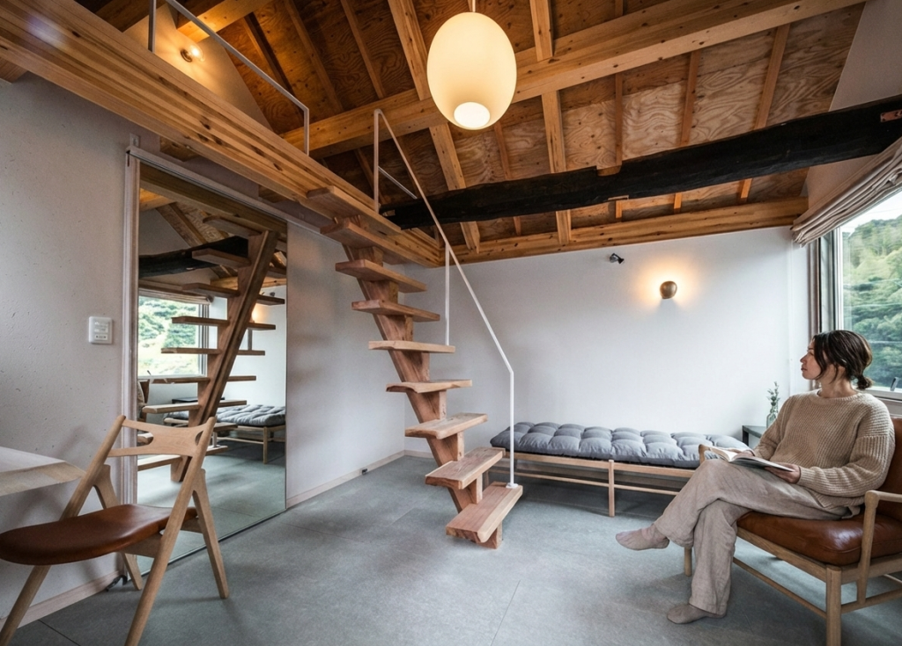
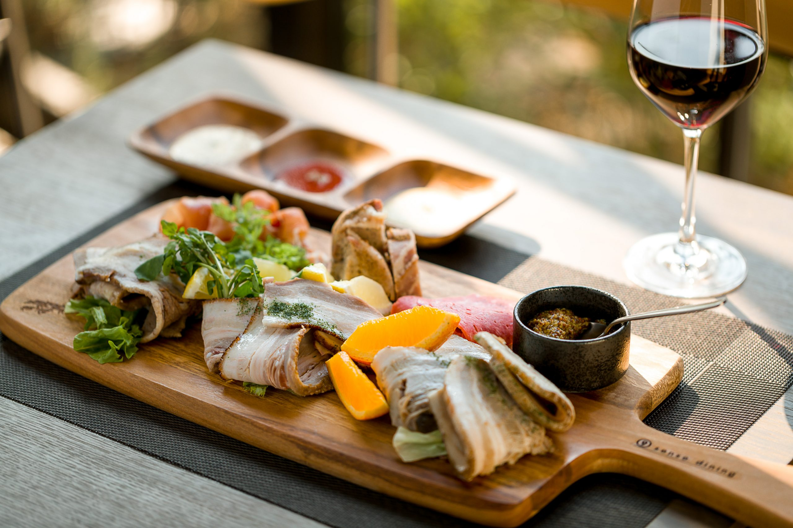

DLoFre's interior
Furniture & Goods北欧の名作家具や照明、色鮮やかなファブリックから日々の暮らしを彩るヴィンテージ陶器まで。長く愛せる本物のインテリアに出会えるライフスタイルギャラリーです。

蔵で旅するBookStore
Books & Culture築100年以上の重厚な「蔵」をリノベーションした空間。建築、デザイン、オーガニックな暮らしに関する書籍が並び、本を通じて新しい世界と出会う静かな時間を過ごせます。


9sense dining (Dinner)
Course Dinnerキャンパス内の静寂に包まれる夜。地元食材を活かしたコース料理と厳選されたワインで、宿泊のお客様や特別な日を祝う大人のためのロマンチックなディナータイムを提供します。